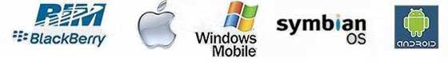

Mobile computing
Mobile Computing is a technology that allows transmission of data, voice and video via a computer or any other wireless enabled device without having to be connected to a fixed physical link. The main concept involves −
- Mobile communication
- Mobile hardware
- Mobile software
(1)Mobile communication
In this situation, the mobile communication applies to the network that has been set up to ensure smooth and efficient communication continues. This will include the tools required to enable and maintain the specified services, such as protocols, networks, bandwidth, and portals. At this point, the data format is specified too. It means no overlap with other current networks which offer the same service. Since the media is unguided/unbounded, the overlaying infrastructure is basically radio wave-oriented. That is, the signals are carried over the air to intended devices that are capable of receiving and sending similar kinds of signals.

(2)Mobile hardware
Mobile hardware includes components for mobile devices or devices which receive or access mobility service. They 'd range from compact laptops , tablets, tablet computers and personal digital assistants. These devices will have a medium with a receptor capable of sensing and receiving signals. Such systems are designed to work in complete duplex, thus being able to simultaneously send and receive signals. They don't have to wait until one device has finished communicating to initiate communications with the other device.

(3)Mobile software
Mobile software is the actual program that runs on the mobile hardware. It deals with the characteristics and requirements of mobile applications. This is the engine of the mobile device. In other terms, it is the operating system of the appliance. It's the essential component that operates the mobile device. Since portability is the main factor, this type of computing ensures that users are not tied or pinned to a single physical location, but are able to operate from anywhere. It incorporates all aspects of wireless communications.
Mobile Computing - Classification
Mobile computing is not only limited to mobile phones, but there are various gadgets available in the market that are built on a platform to support mobile computing. They are usually classified in the following categories −
- Personal Digital Assistant (PDA)
The main purpose of this device is to act as an electronic organizer or day planner that is portable, easy to use and capable of sharing information with your computer systems. PDA is an extension of the PC, not a replacement. These systems are capable of sharing information with a computer system through a process or service known as synchronization. Both devices will access each other to check for changes or updates in the individual devices. The use of infrared and Bluetooth connections enables these devices to always be synchronized. With PDA devices, a user can browse the internet, listen to audio clips, watch video clips, edit and modify office documents, and many more services. The device has a stylus and a touch sensitive screen for input and output purposes.
Mobile Computing - Major Advantages
| Location Flexibility | This has enabled users to work from anywhere as long as there is a connection established. A user can work without being in a fixed position. Their mobility ensures that they are able to carry out numerous tasks at the same time and perform their stated jobs. |
| Saves Time | The time consumed or wasted while travelling from different locations or to the office and back, has been slashed. One can now access all the important documents and files over a secure channel or portal and work as if they were on their computer. It has enhanced telecommuting in many companies. It has also reduced unnecessary incurred expenses. |
| Enhanced Productivity | Users can work efficiently and effectively from whichever location they find comfortable. This in turn enhances their productivity level. |
| Ease of Research | Research has been made easier, since users earlier were required to go to the field and search for facts and feed them back into the system. It has also made it easier for field officers and researchers to collect and feed data from wherever they are without making unnecessary trips to and from the office to the field. |
| Entertainment | Video and audio recordings can now be streamed on-the-go using mobile computing. It's easy to access a wide variety of movies, educational and informative material. With the improvement and availability of high speed data connections at considerable cost, one is able to get all the entertainment they want as they browse the internet for streamed data. One is able to watch news, movies, and documentaries among other entertainment offers over the internet. This was not possible before mobile computing dawned on the computing world. |
| Streamlining of Business Processes | Business processes are now easily available through secured connections. Looking into security issues, adequate measures have been put in place to ensure authentication and authorization of the user accessing the services. Some business functions can be run over secure links and sharing of information between business partners can also take place. Meetings, seminars and other informative services can be conducted using video and voice conferencing. Travel time and expenditure is also considerably reduced. |
Mobile Computing - Current Trends
This chapter lists down the current mobile technologies starting from 3G technologies which is the hottest mobile technology available in the market.
- 3G:
3 G or third generation mobile telecommunications are standards developed by the International Telecommunications Union for mobile phones and mobile telecommunications services which comply with the International Mobile Telecommunications-2000 (IMT-2000) specifications. Application services include wide-ranging wireless voice telephones, mobile Internet access, video calls and mobile television, all in a mobile environment
- Global Positioning System (GPS)
The Global Positioning System (GPS) is a space-based satellite navigation system that provides location and time information in all weather, anywhere on or near the Earth, where there is an unobstructed line of sight to four or more GPS satellites. The GPS program provides critical capabilities to military, civil and commercial users around the world. In addition, GPS is the backbone for modernizing the global air traffic system, weather, and location services.